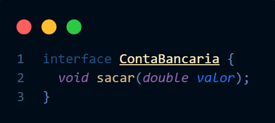
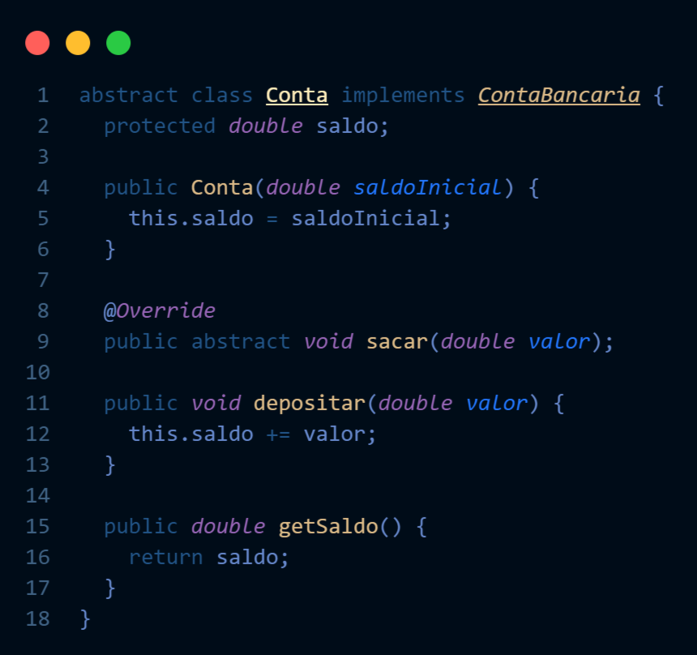
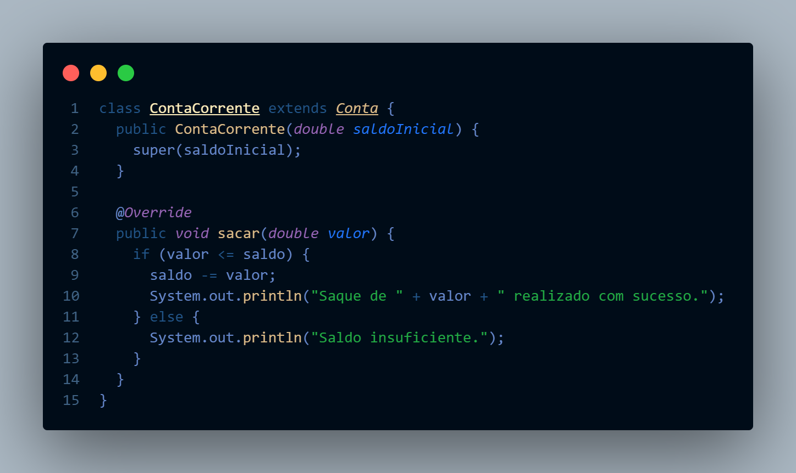

Abstração em POO: Desvendando o Poder da Simplicidade
A abstração é um dos pilares da Programação Orientada a Objetos (POO) e, como um bom mágico, esconde a complexidade por trás de uma interface simples e elegante. Vamos desvendar seus segredos!
🎩 Definição:
Em termos simples, a abstração em POO é como usar um smartphone sem precisar entender de eletrônica. Você interage com a tela, os aplicativos e as funções, sem se preocupar com os milhares de componentes e linhas de código por trás. No código, a abstração permite representar entidades do mundo real (como um carro, uma conta bancária ou um usuário) focando apenas em seus aspectos essenciais, ocultando os detalhes internos complexos e irrelevantes para quem usa a funcionalidade.
✨ Características:
Encapsulamento: Esconde os detalhes internos de um objeto, expondo apenas uma interface para interação. Pense em um controle remoto: você só vê os botões, não os circuitos.
Generalização: Define um modelo genérico (classe abstrata ou interface) que pode ser especializado por múltiplas classes concretas. Imagine uma classe "Animal" com a ação "emitirSom()", e cada animal a implementa à sua maneira.
Polimorfismo: Permite que objetos de diferentes classes sejam tratados de forma uniforme através de uma interface comum. É como usar o mesmo carregador para diferentes modelos de celular.
🤔 Por Que Usar Abstração?
Imagine um carro sem painel. Você teria que mexer em fios e engrenagens para controlar tudo! A abstração simplifica a vida do programador (e a do código!) de várias maneiras:
Organização: Divide o código em partes menores e mais gerenciáveis.
Reutilização: Classes abstratas e interfaces promovem a reutilização de código.
Manutenção: Facilita a manutenção e atualização do código.
Flexibilidade: Permite adicionar novas funcionalidades com mais facilidade.
Trabalho em equipe: Diferentes pessoas podem trabalhar em partes diferentes do código de forma independente.
🎉 Vantagens:
Código mais limpo e legível: foco na funcionalidade, não na implementação.
Menos erros: detalhes complexos ficam escondidos, diminuindo chances de falhas.
Facilidade de manutenção e atualização: modificações ficam restritas a um único local.
Código mais reutilizável: classes abstratas e interfaces promovem a reutilização.
Aumento da produtividade: desenvolvimento mais rápido e eficiente.
🚧 Desvantagens:
Curva de aprendizado: exige um entendimento sólido dos conceitos de POO.
Complexidade inicial: pode parecer mais complicado no início, mas compensa a longo prazo.
Nem sempre é a melhor solução: em casos muito simples, a abstração pode ser um exagero.
Exemplo:
Definindo o Contrato: Interface ContaBancaria
Começamos definindo uma interface chamada ContaBancaria. Pense nela como um contrato que diz: "se você quer ser uma conta bancária, precisa saber como sacar dinheiro".
A interface define o método sacar(double valor), mas não diz como esse saque será feito. Isso fica a cargo das classes que implementarem a interface.
Modelo Base: Classe Abstrata Conta
A classe Conta, marcada como abstract, implementa a interface ContaBancaria, mostrando que ela representa uma conta bancária "genérica".
Ela possui um atributo saldo para guardar o saldo da conta, um construtor para inicializar o saldo, e métodos como depositar e getSaldo que são comuns a qualquer tipo de conta.
Repare que o método sacar também está presente, mas com a palavra-chave abstract. Isso significa que essa classe abstrata não define como o saque será realizado, apenas obriga suas classes filhas (que herdam dela) a implementarem esse método.

A classe ContaCorrente estende (herda) a classe Conta e finalmente implementa o método sacar.
Note que a implementação do sacar em ContaCorrente é específica para esse tipo de conta: verifica se há saldo suficiente antes de realizar o saque.